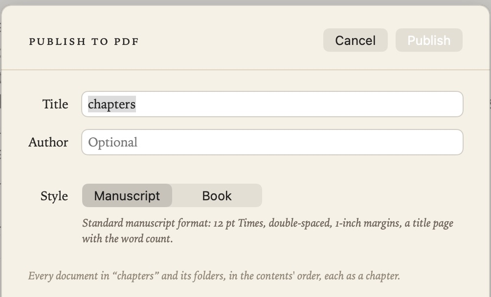
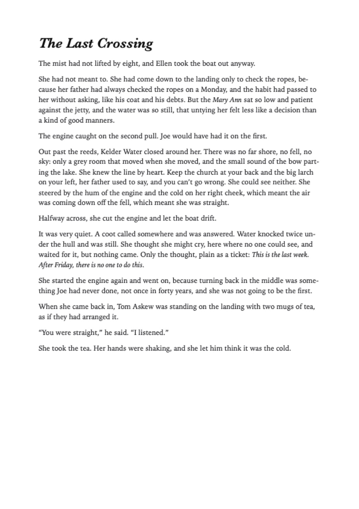
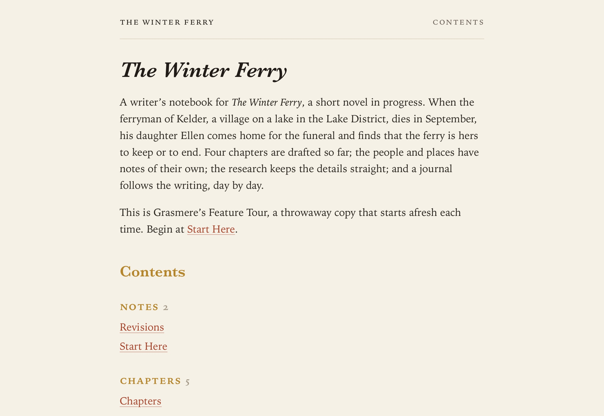

Publishing
Your notes are plain files, so they already work anywhere. When you want something more finished, Grasmere can typeset them as a PDF, build a website, or make flash cards.
Publish a folder to PDF
Right-click a folder in the contents and choose Publish to PDF…, or choose File ▸ Publish Folder to PDF… to publish the folder of the open note. Grasmere typesets all its notes as one PDF, in the folder’s order: each note becomes a chapter on a new page, titled by its first heading, and each folder inside becomes a part.

Give the PDF a title and, if you like, an author, then choose a style:
- Manuscript: standard manuscript format, as publishers and agents ask for. Double-spaced 12 pt Times, one-inch margins, a title page with the word count, and the author, title and page number at the top of each page.
- Book: your theme’s typography, large chapter titles, a divider page for each part, and page numbers at the foot.
The order comes from the folder’s index.md; see The Contents. When the PDF is saved, Show in Finder takes you to it.
Export a note as a PDF
File ▸ Export as PDF… (⇧⌘E) typesets the open note on A4 or Letter pages.

Build a website
Project ▸ Build Website (⌥⌘B) turns your project into a website, in a _site folder inside it: a page for each note, with links that work, the pictures in them, and a list of the notes that link to each page. This website is published that way.

- The home page shows the project’s name, the Summary section of project.md, and the contents.
- Each page is styled with your light and dark themes. There’s no JavaScript and nothing that tracks visitors.
- A note with
draft: trueorpublish: falsein its front matter is left out, and links to it become plain text. - Linked files (such as PDFs), web clippings and saved insights are often other people’s work, so they’re left out unless you include them in Settings ▸ Automation.
- Grasmere shows you what will be published before the first build. After that, rebuilding only changes what has changed, and it never touches files it didn’t write.
When it’s done, Open in Browser shows you the site.
Publish
Project ▸ Publish (⇧⌘P) saves your notes, builds the website if you’ve asked it to, commits anything waiting to git, then runs a Shortcut of your choosing with the project folder: to upload the site, say, or to push it. Choose the Shortcut in Settings ▸ Automation ▸ Publish with.

Export to Anki
Grasmere can turn notes into flash cards for Anki, with the note’s title on the front and the note on the back.
- File ▸ Export as Anki Deck… exports the open note.
- Right-click a folder and choose Export Folder to Anki… for every note in it.
- Pick several notes in the contents, right-click, and choose Export Notes to Anki….
Importing a later export into Anki updates the cards and keeps your reviews.
Related
- Writing Goals
- Saving, Safety and Git, for git and Shortcuts